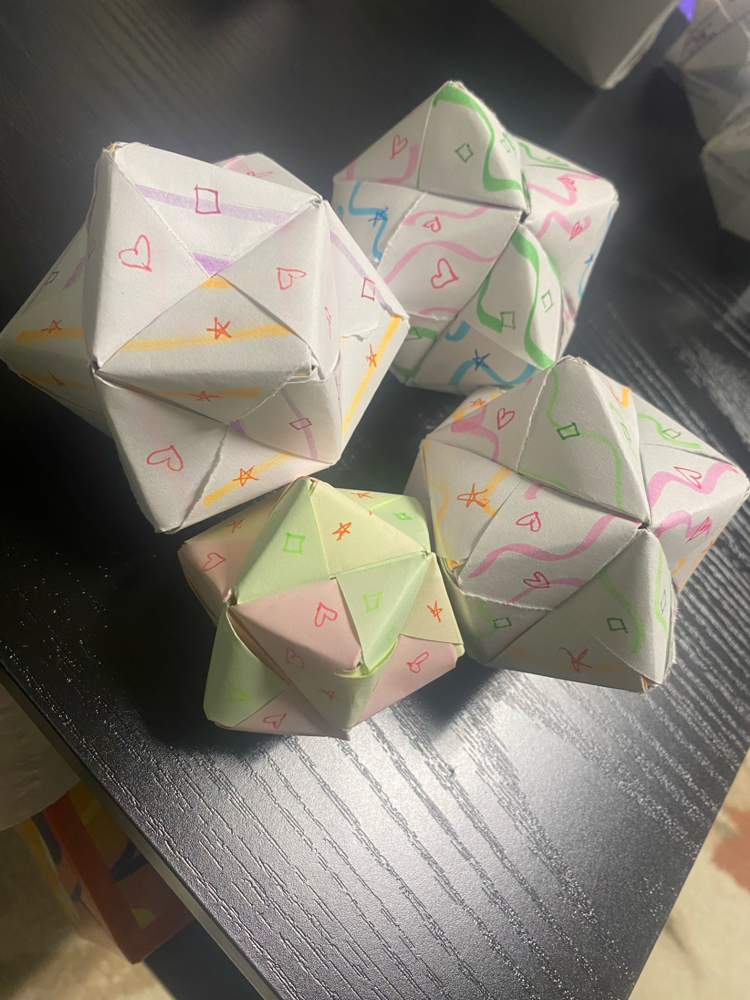
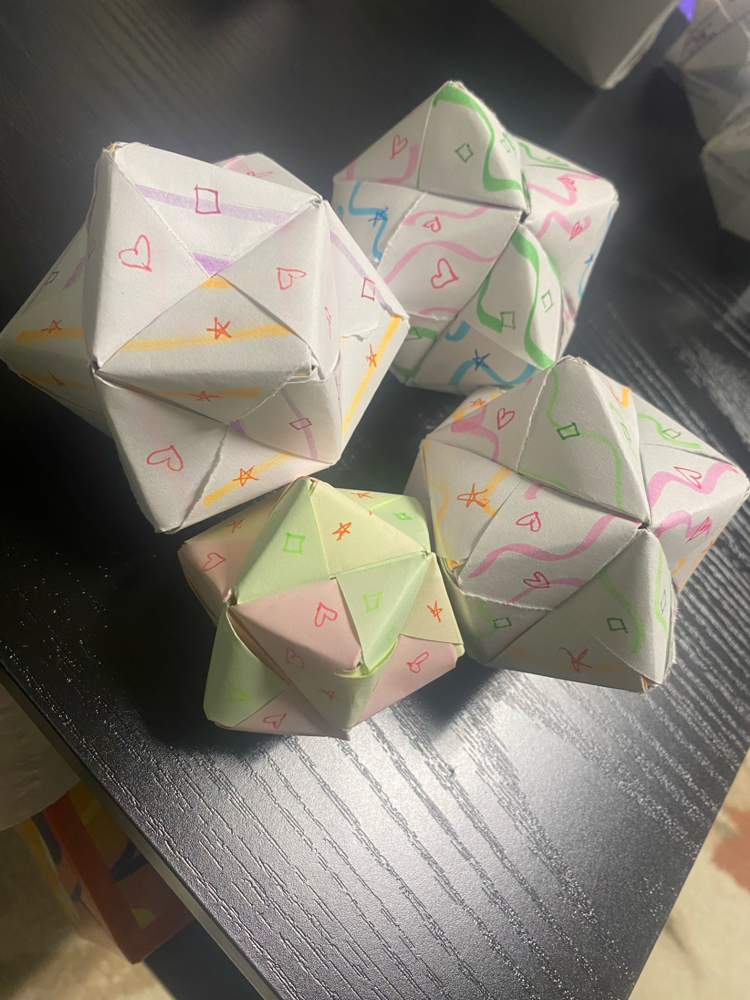
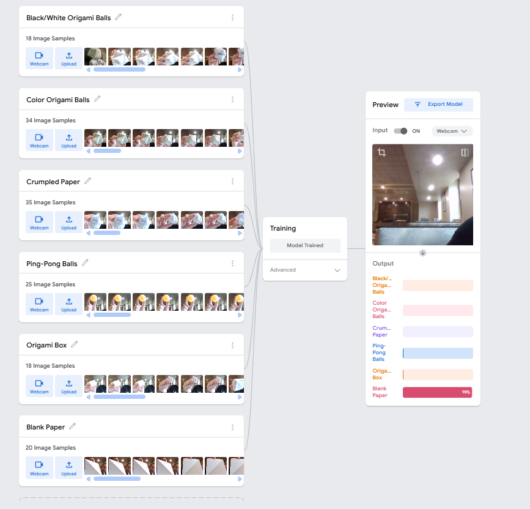

Process
Our process began with defining what kind of model we would train. We considered building a model around sound but ultimately decided on a visual one, reasoning that it would be easier to connect back to our coursework on visual bias—specifically racial, appearance, and body presentation bias. While we did talk about biases also existing in how people sound (e.g., accent, tone), a visual model allowed us to study bias in a more tangible, visual way.
 

Initially, our model was trained on just two classes of black-and-white origami balls versus colorful origami balls. However, in response to thoughtful critiques and a desire to better reflect the themes in Unmasking AI, we rebuild our approach to go beyond binary classifications.
We expanded our dataset to include six distinct object classes: Black/White Origami Balls, Colorful Origami Balls, Crumpled Paper, Ping-pong Balls (for Smooth Texture), Origami Boxes, Blank Sheets of Paper
This variety of objects allows us to explore how the model perceives form, color, and material and where it starts to struggle. For instance, how does it distinguish between an orange ping-pong ball and a colored origami ball? Does it confuse a folded paper box with a ball if both are colorful? These experiments mirrored real-world scenarios where systems break down at the edges or misread context entirely. The technical side of training the model was relatively smooth using Teachable Machine, but integrating it into our website by using HTML and JavaScript required trial and error. Although we leaned on the tutorial code, connecting the model and making it function dynamically on the webpage demanded additional debugging.